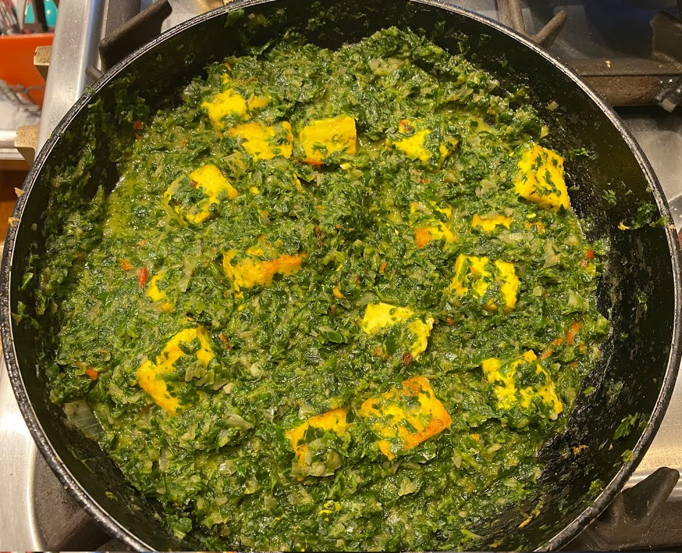

Spinach and Paneer Saag

- Oil
- 2 tsp tumeric
- 1 tsp chilli powder
- 450g paneer cut in cubes
- 500g frozen spinach
- 1 onion
- 3 garlic cloves
- 1 tsp ginger
- 1 red chilli
- 1 tsp garam masala
- 200 mL coconut cream
- lemon juice
In a bottle whisk oil, tumeric and chilli. Add paneer and toss until coated Microwave frozen spinach for 3-5 mins Remove from microwave and place in sieve to remove excess water Blend onion, garlic, ginger and chilli Cook paneer in frying pan for about 8 mins, turning regularly Once cooked remove paneer from pan Fry onion mix in pan with a pinch of salt for about 10 mins, add water if mix becomes dry Add garam masala and fry for another 2 mins Add spinach and 100mL of water to onion mix and cook for another 2-3 mins Add paneer and cocnut cream cook for another 2-3 mins Serve with rice and lemon juice
Serve this dish with samosas and naan.